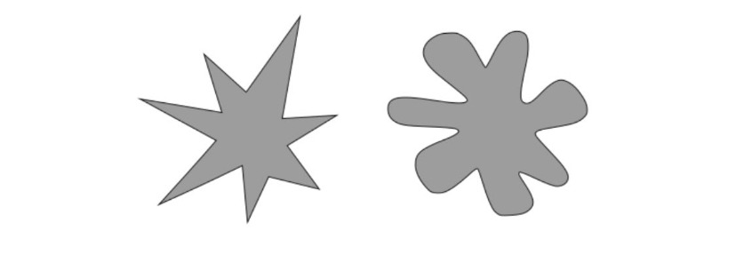

Reflection on Inspiration
Malin
Recently I feel like I’ve been able to see art and design in a more objective sense. By that, I mean that I don't feel like I ever need to 'wait' for inspiration to strike, and instead, I'm always ready to brainstorm and work through ideas and problems. Somewhat forcing inspiration is an essential part of a sustainable, repeatable creative process. I love the idea of basing a project around a found object. Michele and I sourced an old, ornate, metal tissue box from a friend of ours that was originally from an antique store. It was full of all these other antiquated objects like watches and lighters and small pieces of jewellery. A box full of memories. Memory, therefore, became the main focus of a short project. We used the box we found, some electrical components, and some relatively simple code to create a memorisation game. Components included buttons, jumper cables, LED’s, a high-frequency buzzer, wire, cardboard and an Elegoo. (off-brand Arduino that works the same for a fraction of the cost) It’s comforting for me when art and design become inseparable. I feel like it’s essential to have a good understanding of complex technical mechanisms whilst giving yourself the freedom to take them apart, turn them inside out, destroy them, and rebuild them not only a new form and function but a new fundamental concept.
(16.12.21 21:28 New York City, US)
Collective Consciousness
Rocco
Not long ago I read an article about German-American psychologist Wolfgang Köhler, who conducted a study in 1929 where they asked different populations (Tamil speakers in India, Tenerifeans, young children, infants, and American university students) to decide which shape fit “takete” and which fit “baluba”. In all the cases, it was agreed that the shape with the rounded ends should be named “baluba”, and the shape with the sharp ends, “takete”. I think It’s interesting to think, how natural our collective (in)consciousness actually is, and how design and ergonomy are fully rooted in these human brain tendencies. I guess we’re really humans after all.
(28.11.21 07:25 Paris, France)